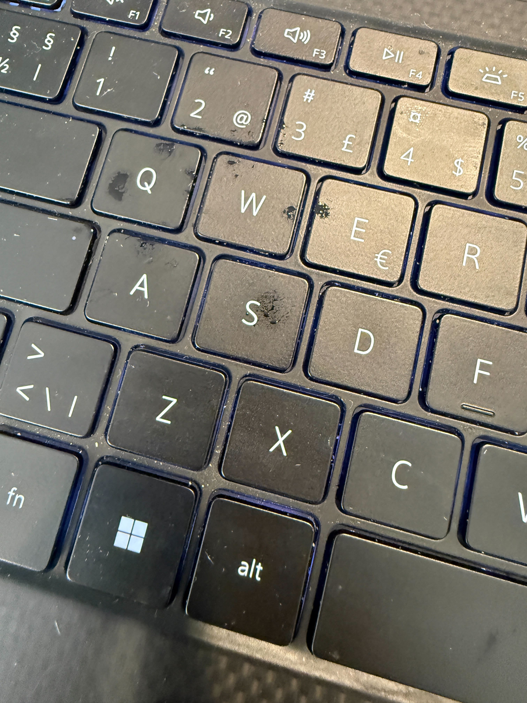

Nya jobbet, trasig AC och blöta fläckar på tangentbordet
Det här är inte en guide. Det är en dagbok från en vecka jag helst hade velat hoppa över – och en påminnelse till alla med hyperhidros om att vi är fler än vi tror.
Måndagsmorgonen
Jag visste redan på morgonen att det skulle bli en jobbig dag. Onboarding på nytt jobb, möte med flera nya kollegor jag aldrig träffat, presentationer i ett rum jag aldrig varit i.
För någon utan hyperhidros är det "spännande och lite nervöst". För mig är det en mental check-lista: vilken skjorta dolde fläckarna sist? Hur långt är det till toaletten? Är det öppen kontorslandskap eller bås? Kan jag sitta nära fönster?
Jag hade applicerat extra Absolut Torr kvällen innan. Tagit en lugn morgon. Ätit ordentligt. Jag hade gjort allt rätt.
Det första som hände när jag kom in
Det var varmt. Inte sommarvarmt – utan kontorsvarmt. Det där lite kvava som uppstår när luftkonditioneringen inte hänger med. Jag hörde någon mumla något om att AC:n var trasig och att teknikern var kallad.
Jag kände det direkt i magen. Inte panik – men den där sjunkande känslan av "den här dagen kommer bli tuff".
Halvvägs genom första mötet

Jag satt och försökte hänga med i en genomgång av interna system. Skrev anteckningar. Försökte se engagerad ut.
Och så märkte jag det. De där små fuktiga fläckarna på tangenterna. Inte synligt drypande – inte så pass. Men för mig, som vet, så syntes det tydligt. Glansiga, lite mörkare fläckar på Q, A, Z, och hela vägen ner till mellanslagstangenten.
I huvudet hörde jag direkt: "alla ser det här".
Det som faktiskt hände
Ingen sa något. Ingen tittade konstigt på mig. Ingen kommenterade. Vi gick vidare i agendan, någon ställde en fråga om Slack-kanaler, någon annan skämtade om kaffemaskinen.
Men i mitt huvud var det som om hela rummet hade pausat och tittat på mitt tangentbord. Som om någon när som helst skulle säga "öh, är allt okej?". Eller värre – inte säga något, men tänka det.
Jag gjorde det jag oftast gör: svalde det och fortsatte. Försökte hålla händerna lite ovanför tangenterna istället för att vila dem. Försökte sitta mer rakt så fläckarna under armarna inte skulle synas. Försökte vara närvarande i mötet samtidigt som halva hjärnan var upptagen med ett helt parallellt projekt: "hur döljer jag det här?"
Det jag tänkte efteråt
När jag kom hem var jag dränerad. Inte av jobbet – jobbet hade varit ganska kul, faktiskt. Folket verkade trevliga, uppgifterna intressanta. Men av kampen. Den parallella mentala uppgiften att hela tiden hantera, dölja, kompensera.
Det är den delen av hyperhidros som ingen pratar om. Den fysiska svettningen är dålig nog. Men den mentala bördan – att alltid vara två steg före, att alltid ha en backup-plan, att alltid scanna rummet efter risker – det är det som tar mest energi.
Resten av veckan
AC:n fixades på onsdagen. Men då hade jag redan tre dagar med extra svettning bakom mig, och min hud var irriterad av att applicera Absolut Torr varje kväll i hopp om att förbättra situationen.
Jag gick hem lite tidigare en dag. Inte för att det var okej att gå tidigare – utan för att jag behövde det. Jag tror inte mina nya kollegor tänkte något särskilt. Det var jag som dömde mig själv.
Det jag vill säga till dig som läser
Om du också haft en vecka som den här – jobb, möten, situationer där du suttit och räknat sekunder tills du kunde gå hem och byta kläder – så vill jag säga två saker:
1. Du är inte ensam. Hyperhidros drabbar 1-3% av befolkningen. I Sverige är vi någonstans mellan 100 000 och 300 000 personer som lever med det här. Vi är inte sällsynta. Vi är bara osynliga för varandra för att vi alla är experter på att dölja det.
2. Det syns mer i ditt huvud än i verkligheten. Jag är säker på att fläckarna på mitt tangentbord var tydliga för mig. Men jag har också suttit i tillräckligt många möten för att veta att människor är fullt upptagna med sina egna saker. Den där grannen som du tror stirrar – hen tänker på sin lunch. Den där kollegan som du tror märkte – hen funderar på sitt eget möte sen.
Det betyder inte att hyperhidros inte är jobbigt. Det är det. Men det betyder att vi ofta bär en tyngre börda än verkligheten kräver av oss.